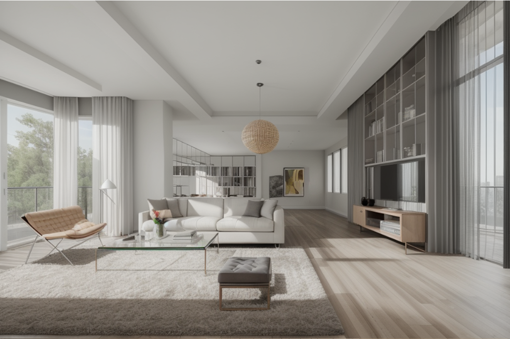
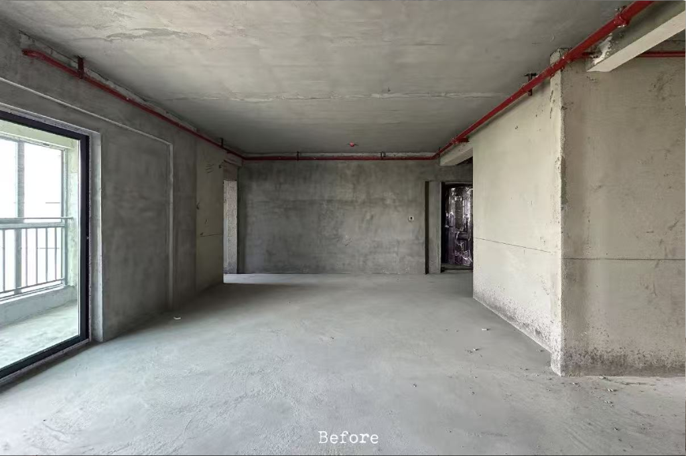
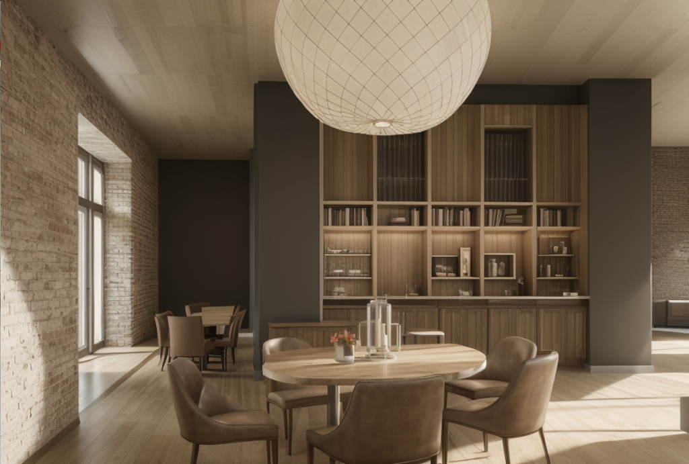
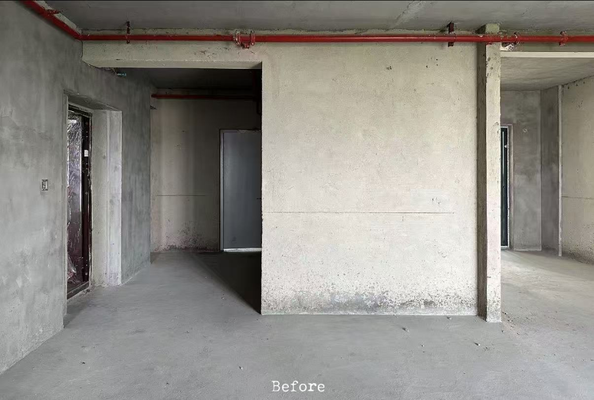
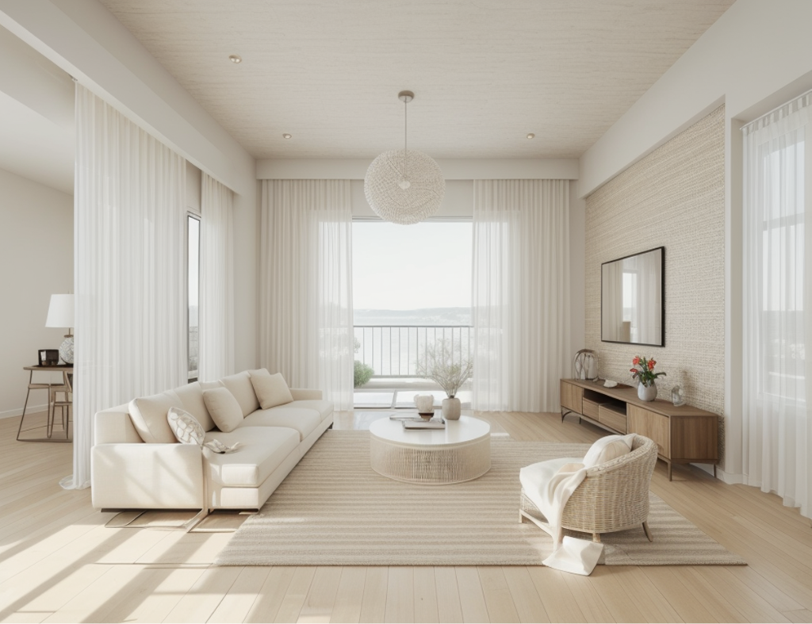
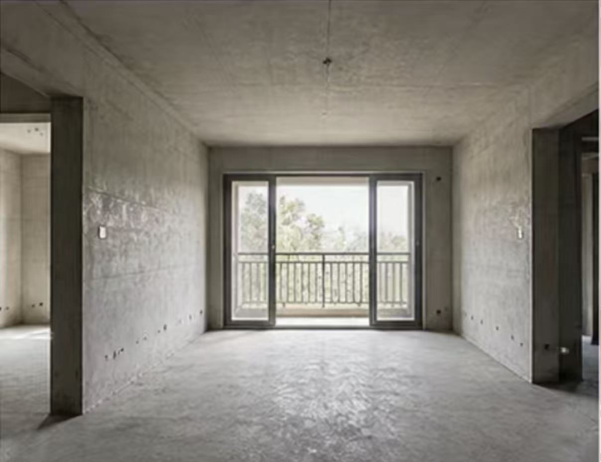

PROJECT OVERVIEW
项目概述
通过 AI 辅助空间视觉设计，将毛坯空间作为基础输入，在保留原始空间结构、透视关系与基本布局逻辑的基础上，对空间风格、材质、家具、灯光及整体氛围进行视觉重构。
VISUAL EXPLORATION 03 · 2026 · SPATIAL AI
AI 空间视觉设计
AI-ASSISTED SPATIAL VISUALIZATION
通过 AI 辅助空间视觉设计，将毛坯空间作为基础输入，在保留原始空间结构、透视关系与基本布局逻辑的基础上，对空间风格、材质、家具、灯光及整体氛围进行视觉重构。


PROJECT OVERVIEW & OBJECTIVE
PROJECT OVERVIEW
通过 AI 辅助空间视觉设计，将毛坯空间作为基础输入，在保留原始空间结构、透视关系与基本布局逻辑的基础上，对空间风格、材质、家具、灯光及整体氛围进行视觉重构。
PROJECT OBJECTIVE
探索 AI 在室内空间概念设计和视觉提案中的应用，通过原始空间与生成结果的直观对比，快速呈现不同空间的设计可能性。
PROJECT BACKGROUND & AI TECHNOLOGY
空间方案前期需要快速呈现改造效果，传统效果图制作周期长，难以在概念阶段高效对比多种方向。
本项目以毛坯空间实拍为输入，通过 AI 在保留原始空间结构、透视与布局逻辑的基础上生成改造后的空间效果，用于方案前期的视觉预演与方向对比，提升空间概念表达与沟通效率。
TOOLS
GENERATION
以毛坯空间图为结构参考，配合提示词描述目标风格、材质、灯光与软装，由 AI 生成改造后的空间画面。
WORKFLOW
WORKFLOW
SCROLL →
毛坯实拍与改造诉求
开间 · 动线 · 采光方向
原木 / 现代简约 / 奶油风
材质 · 光线 · 软装关系控制
生成候选画面并迭代修正
比对结构一致性与完成度
拖动查看改造前后完整效果
BEFORE & AFTER
按住中间分割线左右拖动：向右显示更多原始毛坯 BEFORE，向左显示更多 AI 改造后的 AFTER。




CONCLUSION
AI-ASSISTED SPATIAL CONCEPT & VISUAL PROPOSAL
本项目重点展示 AI 在空间视觉概念阶段的辅助能力：以毛坯实拍为基础输入，快速生成不同风格方向的空间改造方案，在保留原始结构、透视与布局逻辑的同时，通过 Before / After 直观呈现改造前后对比，提高前期视觉探索和方案表达效率。